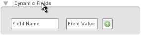
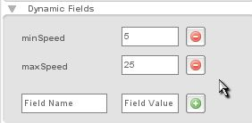
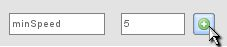
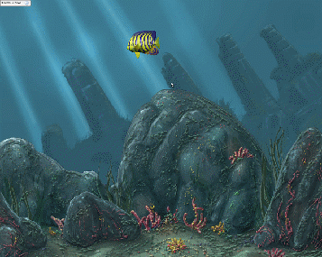

Torque 2D - Fish Demo Tutorial - Part 7
7. Random Speeds
Now our fish swims back and forth, and comes in at a random position when it reaches the world limits. In this part we are going to take it a step further. We will make it come in at random speeds. Not only are we going to make it come in at random speeds, we are going to define the min and max random speeds in the Level Builder; so you will learn another level of integration between the Level Builder and script. Utilizing this type of integration can be immensely useful when you begin to develop your games, this allows you to configure aspects of your game inside of the Level Builder.
|
 |
 |
|
|
 |
Add this function to the end of the script file.
function FishClass::setSpeed(%this)
{
%this.speed = getRandom(%this.minSpeed, %this.maxSpeed);
}
Code Sample 7.2.1
This function will get a random value between the min and max we just specified in the Level Builder. It will store this speed value on the fish object itself, that way we can reference it when we set the fish's velocity. We need to now restructure our onLevelLoaded() function, as well as our onWorldLimit() function. So switch your functions out with these.
function FishClass::onLevelLoaded(%this, %scenegraph)
{
%this.setSpeed();
%this.setLinearVelocityX(%this.speed);
}
function FishClass::onWorldLimit(%this, %mode, %limit)
{
%this.setSpeed();
switch$ (%limit)
{
case "left":
%this.setLinearVelocityX(%this.speed);
%this.setFlipX(false);
%this.setPositionY(getRandom(-35, 25));
case "right":
%this.setLinearVelocityX(-%this.speed);
%this.setFlipX(true);
%this.setPositionY(getRandom(-35, 25));
}
}
Code Sample 7.2.2
There are a couple of things we changed. First, we added a call to setSpeed() at the beginning of both our functions. This will generate a new random speed each time we need to set it. We also changed the setLinearVelocityX() call in our onLevelLoaded() function. It now uses our speed. As you can see, we changed the other two setLinearVelocityX() calls in our onWorldLimit() function to use the speed value as well. (Note that in the second call we still use a negative speed value to ensure our fish goes left).
Save your script file, open up T2D, and play your level. You should see you fish swim in and out of the screen, and each time it will have a random speed! (As shown in Figure 7.2.1.)

Figure 7.2.1